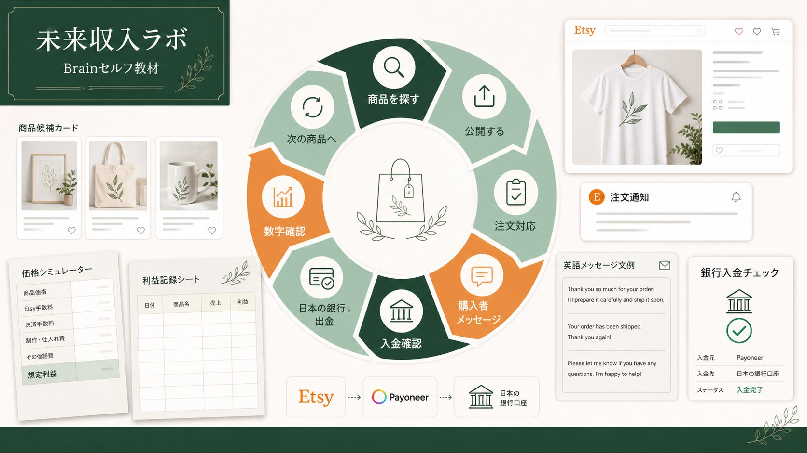

PRODUCT
次の商品候補
Botanical Wall Art
需要と競合を確認
BRAIN ETSY出品・運営セルフ教材
最初の1商品だけで終わらず、需要を調べ、次の商品を出し、売れた後の連絡と入金確認まで。手順書と道具一式を見ながら、自分の運営フローを整えます。

PRODUCT
需要と競合を確認
ORDER & MESSAGE
返信例から選択
NUMBERS
入金を確認
RESULT
一度きりの正解ではなく、調べる、作る、公開する、数字を見る、改善する流れを手元に残します。
3 PARTS
商品素材だけ、出品操作だけに分断せず、注文と入金の後まで順番につなげます。
PART 1
PART 2
PART 3
HOW TO USE
全ページを最初から読む必要はありません。現在地に合わせて、最短ルートと場面別マニュアルを使い分けます。
PART 1 → PART 2
素材づくり10項目からEtsy出品編全23章へ進み、商品ページの公開と初期確認までを順番に完了します。
PART 3
注文、問い合わせ、未着、再印刷、レビュー、出金など、必要になった場面から開ける辞書として使います。
PART 2 / 全23章
225で整理した出品工程を、迷いやすいまとまりごとに6フェーズへ分けます。
必要ツール、材料、商標・権利、EtsyとPrintifyの連携。
商品、印刷会社、色、サイズ、デザイン配置を決定。
送料、手数料、セールを含め、赤字にならない価格を逆算。
モックアップ、画像順、タイトル、説明文、タグ、属性を整備。
セール、クーポン、公開前チェック、Publish、公開直後確認。
数字、改善順、更新判断を記録し、2商品目へ広げる。
PART 3 / ショップ運営編
Brainセルフ教材の価値の中心です。説明だけでなく、文例、対応フロー、記録シートの実物を使います。
次に試す市場、季節、対象者を探します。
採用・保留・見送りと、次に確認する日を記録します。
注文確認からPrintifyの生産・発送までを追います。
注文、発送、問い合わせに使える英語文例を選びます。
状況確認と購入者への案内順をフローで判断します。
誰へ何を確認し、どの対応を選ぶかを分けます。
未着や注文問題のケースが開いたときの確認順を整理します。
感情的に返さず、公開返信と個別連絡を使い分けます。
バナー、About、ポリシーを商品数に合わせて整えます。
応答率、指標、休暇モードなど止めるときの手順を確認。
売上反映と入金状況を照合します。
出金手順、反映、手数料を確認します。
商品単位で売上、原価、送料、手数料を残します。
記録を整理し、必要に応じて税務署や税理士へ確認します。
数字と候補を見て、次に作るものと作業日を決めます。
TOOLS INCLUDED
計算、購入者対応、入出金記録を毎回ゼロから考えないための道具一式です。
販売価格、原価、送料、手数料から利益の目安を確認します。
注文、発送、問い合わせなど、よくある連絡の例を使えます。
入金と費用を記録し、次に確認する数字を残します。
商品案に合わせて見た目の型を選び、毎回ゼロから配置を考える時間を減らします。
遅延、未着、印刷ミス、破損、返金、再印刷で確認する順を図で追います。
次の商品、保留理由、確認日、改善内容を残し、翌月の計画へつなげます。
WHO IT IS FOR
Brainは読む量を増やすためではなく、出品後の判断を毎回ゼロから調べ直さないための教材です。
販売価格
価格は公開準備が整い次第、このページでご案内します。売上や利益を保証する教材ではありません。
NEED DIRECT SUPPORT?
90分だけ現在地を整理する方法と、3か月直接質問しながら商品を増やす方法があります。
FAQ
教材の使い方と対応範囲を明確にします。
ありません。Part 1〜2は公開まで順番に進め、Part 3は注文、問い合わせ、出金など必要な場面が来たときに開きます。
はい。素材づくりとEtsy出品編を順番に進め、最初の1商品を公開できます。
購入者メッセージやトラブル対応を事前に確認できます。商品探索、候補管理、数字記録は注文前から使えます。
いいえ。販売価格、原価、送料、手数料を入れ、赤字を避けるための利益目安を確認する道具です。
教材では記録の整理と確認先の入口を扱います。個別の税務判断は税務署または税理士へご確認ください。
商品、需要、競合、価格、時期によって変わり保証できません。公開後は30日単位で数字を見つつ、短期で消さず2〜3か月の更新判断も行います。